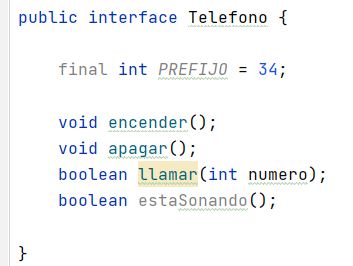

✨ Interfaces (y sealed interfaces) en Java
📌 Una interfaz no es una clase. Es un contrato: define qué debe poder hacer un objeto (métodos) sin decir necesariamente cómo (aunque desde Java 8 puede incluir implementación con
default/static).
🧩 1) ¿Qué es una interfaz?
Una interfaz define un conjunto de métodos pero NO los implementa. Las clases que la implementan son las que deben implementar esos métodos (salvo que el método sea default o static).
La idea es proporcionar un comportamiento común que pueda ser utilizado por varias clases que implemente una interfaz.
✅ Sirve para:
- Abstracción (programar contra un contrato).
- Desacoplamiento (cambiar implementaciones sin romper el código).
- Herencia múltiple de tipo (una clase puede implementar varias interfaces).
📌 Reglas básicas:
- Una interfaz no se instancia.
- Una clase puede implementar muchas interfaces: class A implements I1, I2 { ... }
- Una interfaz puede extender varias interfaces: interface I3 extends I1, I2 { ... }
- Una interfaz no puede extender una clase.
🧠 2) ¿Por qué se usan interfaces?
✅ Caso típico: “capacidad”
Cuando quieres modelar capacidades independientes:
- Imprimible
- Pagable
- Serializable
- Comparable<T>
Ejemplo mental: un Coche es-un Vehiculo (herencia), pero además puede-ser Asegurable, Matriculable, Imponible (interfaces).
🧬 3) Interfaz vs herencia: ¿cuál uso?
🧱 Usa herencia cuando…
- Hay relación clara ES-UN (
CocheES-UNVehiculo). - Quieres reutilizar estado (atributos) y comportamiento común.
🧩 Usa interfaces cuando…
- Quieres polimorfismo sin heredar estado.
- Quieres combinar “capacidades” (herencia múltiple de tipo).
- Quieres que el código consuma un contrato (ej.:
List,Map,Runnable,Comparable).
❇️ Relaciones entre interfaces y clases
Tenemos tres tipos de relaciones:
classBextendsclassA: una clase B hereda de una clase A.classimplementsinterface1,interface2, ...: una clase puede implementar una o varias interfaces, para ello usaremos la palabra reservada implements.interfaceBextendsinterfaceA,interfaceC, ...: una interfaz B puede heredar los métodos de una o varias interfaces. Una interfaz NO PUEDE heredar de una clase.
También podemos combinar algunas relaciones:
classBextendsclassAimplementsinterface1,interface2, ...: una clase B hereda de una clase A y también implementa los métodos definidos en las interfaces. (Simulación de la herencia múltiple)
🧷 4) ¿Qué puede haber dentro de una interfaz?
📌 Métodos abstractos
En una interfaz, un método sin cuerpo es implícitamente:
- public abstract
public interface Impuesto {
double calcularImpuestoAnual();
void imprimirImpuesto();
}
📌 Constantes
Toda “variable” en una interfaz es implícitamente:
- public static final
public interface Impuesto {
double TASA = 0.06; // public static final
}
⚠️ No hay atributos de instancia en interfaces (no “estado” por objeto).
El compilador de Java agrega las palabras clave:
- public abstract cuando se define un método, por lo que se puede omitir en los encabezados de los métodos.
- public static final en el caso de las constantes.

Warning
Los métodos abstractos NO pueden ser PRIVATE ni PROTECTED.
🆕 5) Novedades importantes en interfaces (Java 8+)
✅ Java 8 — default methods
Permiten añadir métodos “nuevos” sin romper todas las clases que ya implementan la interfaz.
public interface Impuesto {
double TASA = 0.06;
double calcularImpuestoAnual();
default void imprimirTasa() {
System.out.println("Tasa actual: " + TASA);
}
}
✅ Java 8 — static methods
Métodos utilitarios de la interfaz. No se heredan como “override”. Se llaman con el nombre de la interfaz.
public interface Impuesto {
double TASA = 0.06;
static double tax(int precio) {
return TASA * precio;
}
}
✅ Java 9 — private methods (y private static)
Útiles para reutilizar código interno en default o static sin “ensuciar” la API pública.
public interface Impuesto {
double TASA = 0.06;
default double duplicar() {
return duplicarTasa();
}
private double duplicarTasa() {
return TASA * 2;
}
static double tax(int precio) {
log(precio);
return TASA * precio;
}
private static void log(int precio) {
System.out.println("Calculando impuesto de " + precio);
}
}
✅ Tipos de métodos y qué ocurre con ellos
👉 Una clase que implementa una interfaz hereda los métodos default, pero está obligada a implementar sus métodos abstractos.
Es decir:
- Los métodos abstractos → la clase está obligada a implementarlos.
- Los métodos default → la clase los recibe automáticamente, como si los heredara. Si quiere cambiar el comportamiento, la clase puede sobrescribir el default.
- Los métodos static → no se heredan, se llaman desde la interfaz.
⚔️ 6) Conflictos con default (diamante)
Si una clase implementa dos interfaces que tienen el mismo default method, hay conflicto y debes resolverlo:
interface A {
default void hola() { System.out.println("A"); }
}
interface B {
default void hola() { System.out.println("B"); }
}
class C implements A, B {
@Override
public void hola() {
A.super.hola(); // o B.super.hola(), o tu propia lógica
}
}
✅ Regla rápida:
- “La clase gana” si hay método en clase.
- Si hay conflicto de dos default, tú decides.
🧪 7) Interfaces funcionales (muy útiles con lambdas)
Una interfaz funcional tiene un único método abstracto. Se usa en lambdas y streams.
@FunctionalInterface
public interface Validador {
boolean test(String s);
}
Uso:
Validador v = s -> s != null && s.length() >= 3;
System.out.println(v.test("hola")); // true
📌 Ojo:
- Puede tener default y static, y seguir siendo funcional.
- Lo que cuenta es métodos abstractos.
🧷 8) Marker interfaces (interfaces “marca”)
Son interfaces vacías para “marcar” una clase con una característica.
Ejemplos típicos del JDK:
- Serializable
- Cloneable
📌 Hoy en día, muchas veces se prefiere una anotación, pero conviene conocer el concepto.
🆚 9) Interfaces vs clases abstractas
✅ Clase abstracta:
- Puede tener atributos de instancia.
- Puede tener constructores.
- Puede mezclar métodos abstractos y con cuerpo con cualquier visibilidad.
✅ Interfaz:
- No tiene estado por objeto (solo constantes).
- No tiene constructores.
- Permite herencia múltiple de tipo.
- Puede tener default/static/private (Java 8/9).
📌 Regla práctica:
- Si necesitas estado compartido → abstracta.
- Si necesitas contrato + desacoplamiento + múltiples capacidades → interfaz.
🧊 10) Sealed interfaces (Java 17)
🎯 Objetivo: permiten restringir qué clases o interfaces pueden implementarlas.
✅ Sealed interface
Una sealed interface controla qué clases pueden implementarla. Normalmente una interfaz puede ser implementada por cualquier clase:
interface Pago {}
class Bizum implements Pago {}
class Tarjeta implements Pago {}
class Bitcoin implements Pago {}
Con sealed interface decides quién puede implementarla:
public sealed interface Pago permits Bizum, Tarjeta, Efectivo {
double importe();
}
Ahora solo esas clases pueden implementar la interfaz.
Implementaciones permitidas
Las clases permitidas deben ser una de estas:
- final (no se puede extender),
- sealed (sigue restringiendo),
- non-sealed (abre la jerarquía).
public final class Bizum implements Pago {
private final double importe;
public Bizum(double importe) { this.importe = importe; }
public double importe() { return importe; }
}
public non-sealed class Tarjeta implements Pago {
private final double importe;
public Tarjeta(double importe) { this.importe = importe; }
public double importe() { return importe; }
}
public sealed class Efectivo implements Pago permits Euro, Dollar {
private final double importe;
public Efectivo(double importe) { this.importe = importe; }
public double importe() { return importe; }
}
public final class Euro extends Efectivo {
public Euro(double importe) { super(importe); }
}
public final class Dollar extends Efectivo {
public Dollar(double importe) { super(importe); }
}
📌 Reglas importantes:
- permits puede omitirse si las clases están en el mismo fichero y el compilador lo deduce.
- Lo normal es que estén en el mismo módulo/paquete (según configuración del proyecto).
🧠 Ventaja con pattern matching
Con jerarquías selladas, el compilador puede ayudarte a que tus switch/if sean “exhaustivos” y verificar todos los casos.
Ejemplo clásico:
static String etiqueta(Pago p) {
if (p instanceof Bizum) return "BIZUM";
if (p instanceof Tarjeta) return "TARJETA";
if (p instanceof Efectivo) return "EFECTIVO";
...
}
🧩 11) Ejemplo completo (interfaces + default + sealed)
🎬 Caso: “CineExpress” con tipos de entrada restringidos.
public sealed interface Entrada permits Normal, VIP {
double precio();
String tipo();
default void imprimir() {
System.out.println(tipo() + " -> " + precio() + "€");
}
}
public final class Normal implements Entrada {
private final int edad;
public Normal(int edad) { this.edad = edad; }
public double precio() {
return edad < 14 ? 6 : 8;
}
public String tipo() { return "NORMAL"; }
}
public final class VIP implements Entrada {
public double precio() { return 15; }
public String tipo() { return "VIP"; }
}
Uso:
public class Main {
public static void main(String[] args) {
Entrada e1 = new Normal(12);
Entrada e2 = new VIP();
e1.imprimir();
e2.imprimir();
}
}